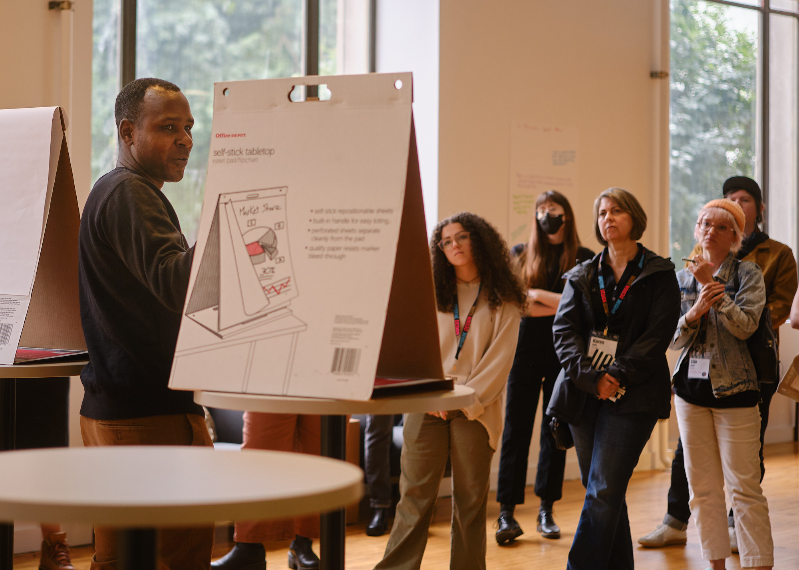

Design belongs where the problem is.
I am a design leader, builder, and teacher with two decades across the web, institutional delivery, and technical implementation. I built and led one of the first large-scale forward-deployed design practices, with 40 people working inside consequential delivery problems.

I came up through the web.
For a decade I rescued and ran institutional websites. I moved organizations from hand-coded pages to content management systems, then through the social media era. I owned marketing and strategic communications because the web person often owned everything. I wrote code, trained staff, managed vendors, and kept public systems working.
I lead without leaving the work.
That foundation lets me move across research, service design, content, product, communications, organizational design, and executive advisory. I have managed managers, built and grown multidisciplinary teams, rescued consequential projects, shipped mission-critical resources for local communities, and helped institutions avoid spending millions on the wrong approach. I speak globally and teach urban technology. I still write, prototype, facilitate, debug, and build.
I care what happens after launch.
The cheaper generating solutions gets, the scarcer understanding the problem becomes. I study how services actually work: who holds authority, where judgment lives, how paperwork moves, which handoffs fail, and who absorbs the friction. My work on forward-deployed design, trajectory management, agent experience, and public trust follows the same line. Better technology should improve what a system becomes.
Offline.
I am a longtime high school tennis coach who has won state titles and coach-of-the-year awards. I have served on several community nonprofit boards, worked as a radio DJ and news anchor, created sabermetrics for the Finnish sport of pesäpallo, and invented a sport called Tennis Polo 22 years ago.